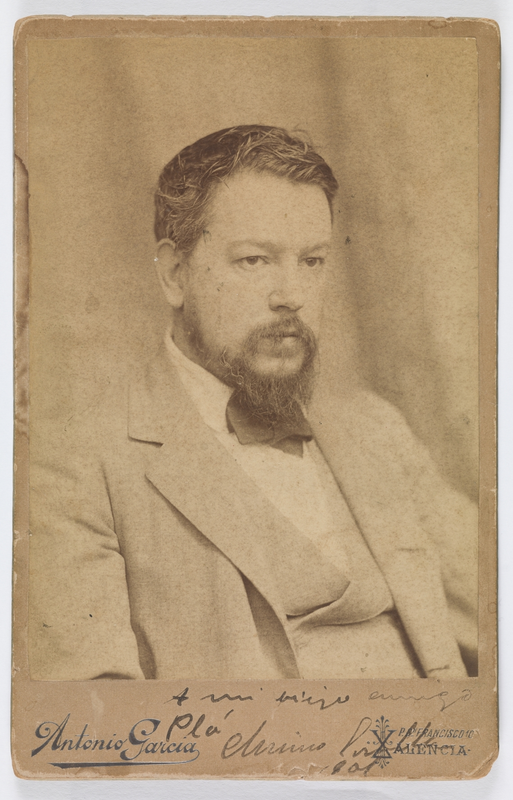

Joaquín Sorolla (1863-1923) fue un pintor español destacado por sus obras llenas de luz y color, representando principalmente escenas costumbristas, paisajes y retratos. Nacido en Valencia, quedó huérfano a los dos años y creció bajo el cuidado de sus tíos. Estudió arte en su ciudad natal y luego en Madrid, perfeccionándose en Roma y París, donde consolidó su estilo impresionista. Su fama internacional llegó con obras como Cosiendo la vela y su serie monumental para la Hispanic Society of America. Murió en Cercedilla tras sufrir una hemiplejía, dejando un legado que celebra la luz mediterránea y la vida cotidiana.